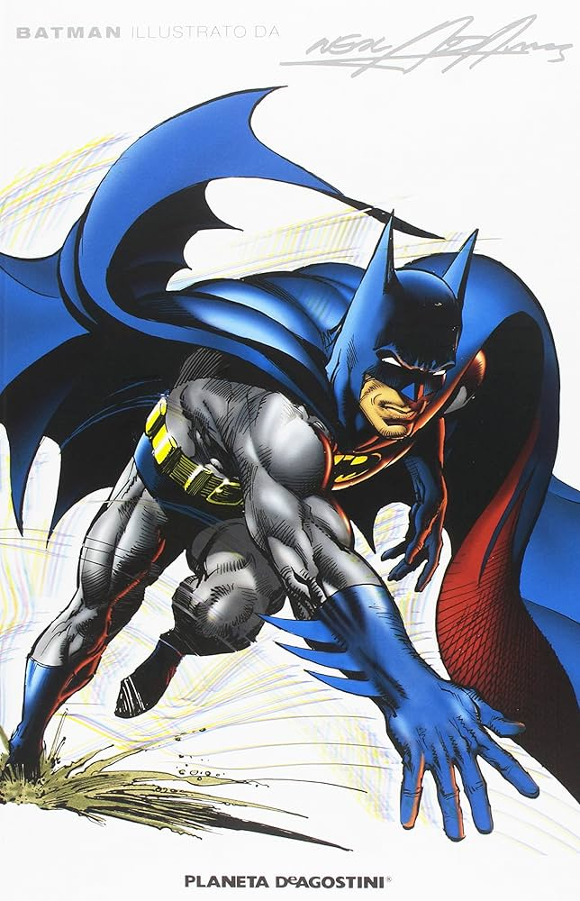
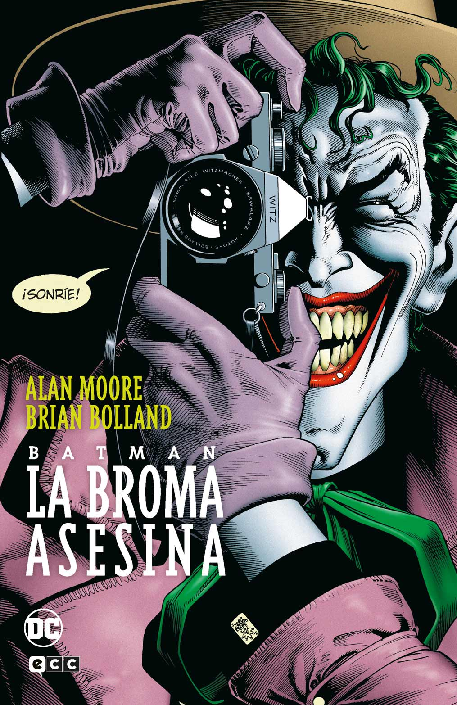

Oscuro
 Dictado IA 
Advertencia:
API Key en código. Para producción, usar backend.
Empezar a Grabar
Pausar
Detener
Reintentar
Copiar Todo
Estado: Esperando para grabar...
Nivel de Entrada de Audio:
Escuchar Grabación Original:
Técnica Aplicada:
Abd Art+Portal
Abd Portal
Tórax+Abd Art+Portal
Abd Hernia
Abd 3 Fases
Eco Abd
RM Hepática
ColangioRM
EnteroRM
RM Fístulas
RM Neo Pelvis
Borrar Técnica
Texto del Informe: